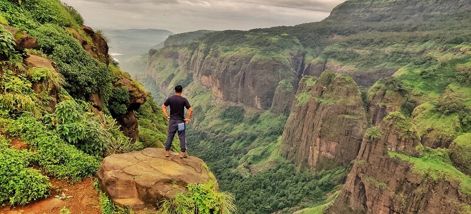
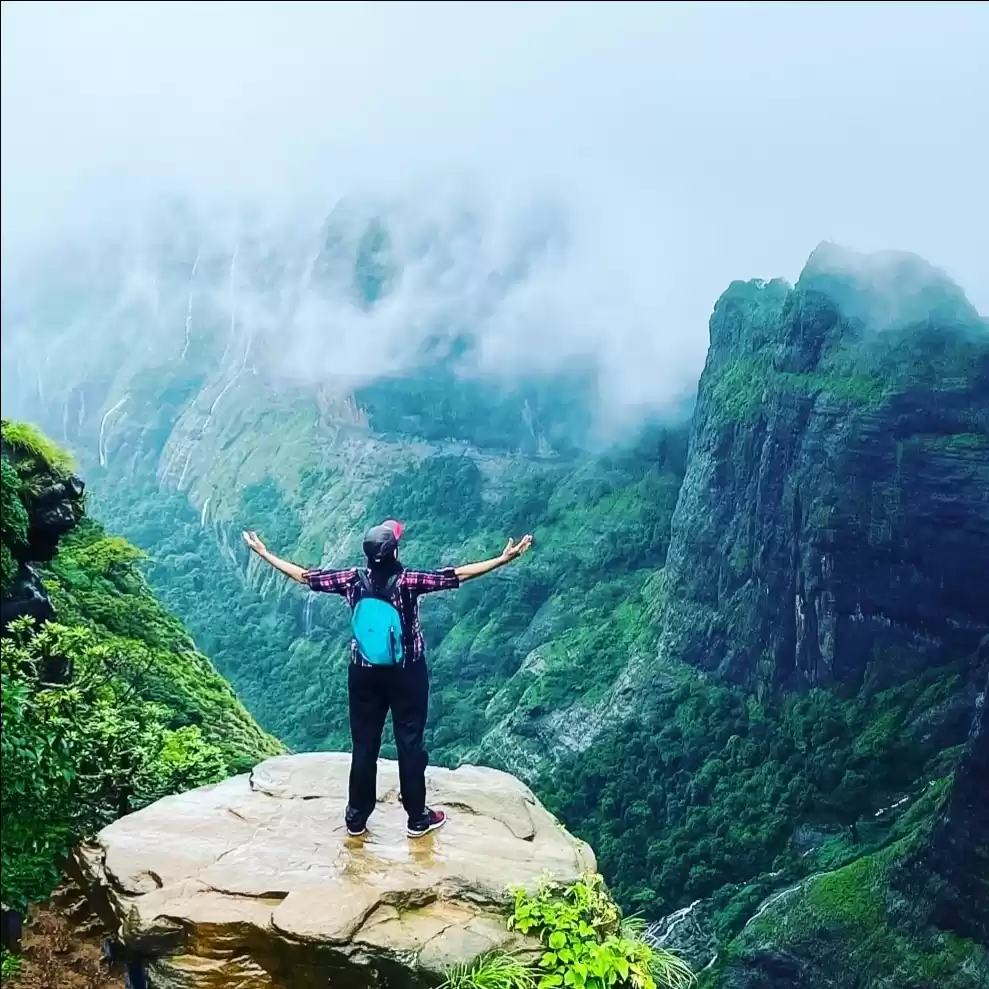
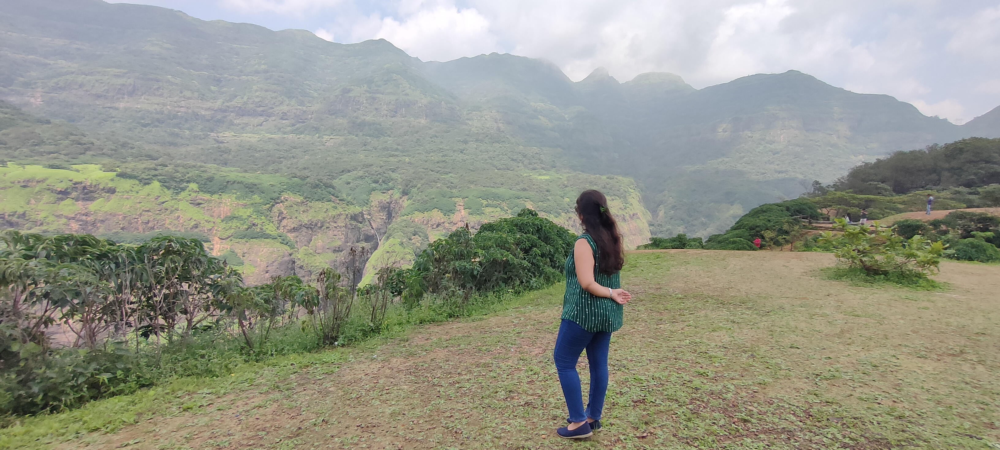

kundalika valley
(A Mystic Mountain)
 Introduction
The river Kundalika, one of the West flowing rivers, in Maharashtra originates in the Sahyadri hills of the Western Ghats near the village Bhamburda. Initially, the river flows in South-West direction up to Patnus village and then turns to North-West till it joins the Arabian sea near village Korlai.History
Kundlika Valley is very beautiful and mind blowing place parallelly to the most famous monsoon trek andharban. The Valley is created by erosion of the river Kundalika is a small river flowing from the hills of Sahyadri to the Arabian sea, also well known place for white water river rafting in Maharashtra.Kundlika Valley is very beautiful and mind blowing place. The Valley is created by erosion of the river Kundalika !
